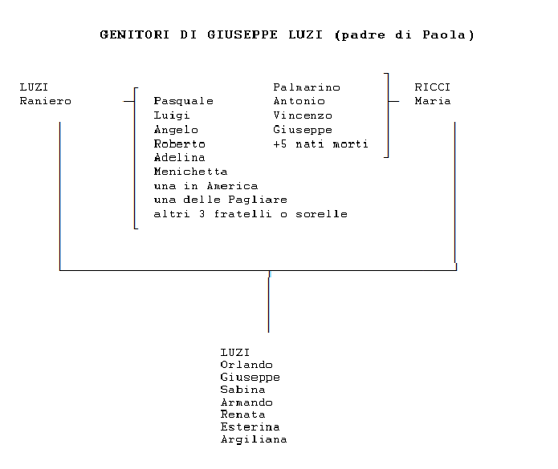
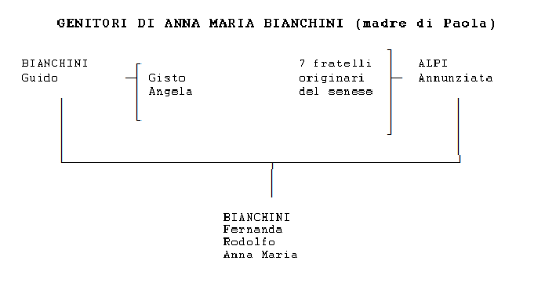
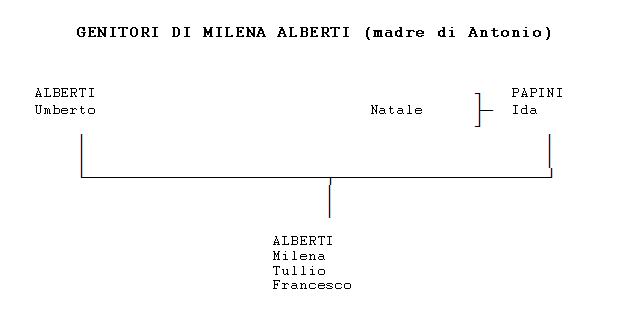
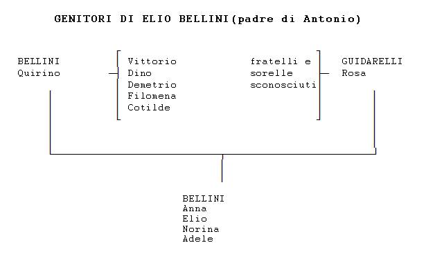
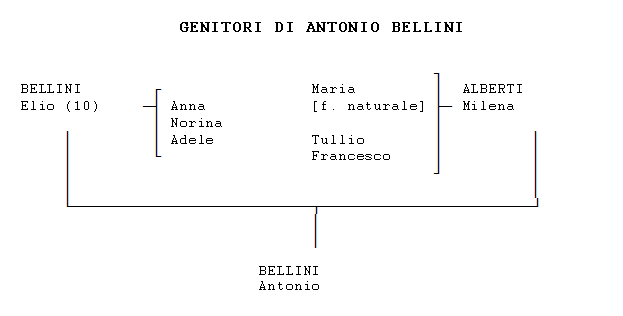
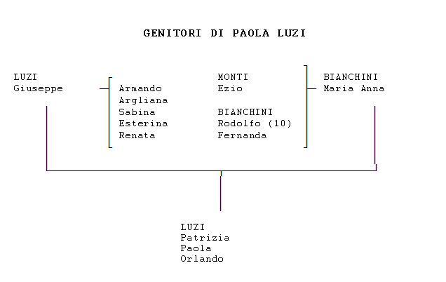

Queste notizie
delle famiglie di Paola Luzi e Antonio Bellini sono state raccole nei
primi anni '90. Per la famiglia di Paola Luzi, da suo padre Giuseppe
Luzi, da sua madre Anna Maria Bianchini e da sua zia suor Renata Luzi.
Per la famiglia di Antonio Bellini, da sua madre Milena Alberti e dalle
sue zie Adele e Norina Bellini.

GIUSEPPE LUZI (padre di Paola Luzi)
I GENITORI DI RANIERO LUZI (nonni paterni di Giuseppe Luzi, bisnonni di Paola Luzi)
Non ci sono notizie dirette sui genitori di Raniero. Si sa che Raniero
era il tredicesimo di tredici fratelli e sorelle. La sua famiglia era
molto povera, e pare che il padre ed i fratelli per vivere lavorassero
la terra a stagioni nei dintorni di Roma. Raniero nacque nel 1899 nei
pressi di Ancarano (TE). Quindi la nascita dei genitori si può
localizzare attorno al 1860.
Dei dodici fratelli di Raniero non si conoscono tutti i nomi, e anche
per quelli di cui si conosce il nome, non si ha quasi nessuna notizia.
Alcuni dei fratelli erano Adelina, Pasquale, Luigi, Angelo, Roberto,
Menichetta, un'altra sorella abitava alle Pagliare, vicino
Ancarano; un'altra sorella era emigrata negli Stati Uniti e dopo la 2^
G. M. spediva dei pacchi alimentari alla famiglia.
AMADIO
RICCI e SABINA DE LUCA (nonni materni di Giuseppe Luzi, bisnonni di Paola Luzi) Non ci sono
notizie sui genitori e sui fratelli di Amadio e Sabina. Sabina nacque
nel 1876. Sulla data di nascita di Amadio non ci sono notizie dirette,
ma sembra verosimile porla circa nel 1870. Visto che ebbero il primo
figlio Palmarino nel 1901, è anche verosimile che si siano
sposati nel 1900.
Abitavano in una casa in Ancarano, in frazione Madonna della Carità.
Amadio era un commerciante di pecore, che comprava e vendeva nelle
fiere di paese. Produceva anche formaggio, soprattutto per uso
familiare. Sabina era casalinga. Amadio era secco secco, e portava i
baffi. Era di animo molto buono. Quando passava con le pecore davanti
alla casa di sua figlia Maria Ricci, di solito lasciava un agnello per
mangiare. Sabina era una donna molto grassa. Dal matrimonio nascono
Palmarino (1901), Antonio (1902), Maria (1905), Vincenzo (1915) e
Giuseppe (1917). Nel 1932 anche la nipote Sabina LUZI, va a vivere
nella loro casa. Sabina DE LUCA è morta nel 1953.
RANIERO
LUZI e MARIA RICCI (padre e madre di Giuseppe Luzi, nonni paterni di Paola Luzi) Raniero nacque
nel 1899 nei pressi di Ancarano. Era il tredicesimo di tredici
fratelli. La sua famiglia era molto povera, e pare che il padre ed i
fratelli per vivere lavorassero la terra a stagioni nei dintorni di
Roma.
Maria nacque nel 1905 in Ancarano, da Amadio RICCI e Sabina DE LUCA.
Si sposano nel 1927. Vanno ad abitare nel podere Camporanno di
Ancarano, di 9 tommolata di terra, in una delle tipiche case di terra e
sterco di vacca. Raniero lavora come contadino sottoposto, mentre Maria
è casalinga. Nascono i figli Orlando (1928), Giuseppe (1930), Sabina
(1932), Armando (1935), Renata (1936), Esterina (1938) e Argiliana
(1940). Sabina va a vivere con i nonni materni. Nel 1935 circa, il
proprietario del podere costrui una nuova casa sul podere, per la
famiglia Luzi. Raniero non aveva molto carattere, e pare che ogni tanto
bevesse un po' troppo. Quando i contadini si ritrovavano a veglia,
suonava l'organino. Maria veniva da una famiglia più benestante e aveva
una mentalità borghese. Raccomandava ai suoi figli: "Accompagnati con
quello più ricco di te, e offrigli da bere". Teneva molto al modo di
vestire dei figli, anche in periodo di particolare ristrettezza. Dopo
la Guerra, tingeva le lenzuola per fare le camicie ai figli. Nel 1946
La famiglia lascia il podere, compra una casa all'interno di Ancarano e
Raniero e il figlio Giuseppe lavorano come operai edili alla bonifica
del fiume Tronto, o come braccianti agricoli a giornata.
^^^^^^^^^^^^^^^^^^^^^^^
(Racconto di suor Lida, Madre delle suore della Consolata di Firenze)
Dopo la 1^ Guerra Mondiale, Don Facibeni, che era stato cappellano
militare sul Monte Grappa, volle creare l'Opera della Madonnina del
Grappa, per accogliere gli orfani di guerra. L'Opera era formata da due
collegi: uno maschile, a Firenze; e uno femminile, in Emilia. Durante
la 2^ Guerra Mondiale fu chiesto, alle suore missionarie della
Consolata di Torino, di prestare aiuto negli ospedali da campo, visto
che a causa della guerra non potevano andare nelle loro missioni, in
Africa. Dopo la Guerra fu chiesto a suor Quintilia e ad altre suore
della Consolata di Torino, di rimanere a Firenze a formare la sezione
femminile del collegio della Madonnina del Grappa, che allora contava
circa 300 ragazzi. Cominciarono allora ad affluire una ventina di
ragazze, fra cui Sabina Luzi, che pose le basi per il successivo
trasferimento di tutta la famiglia a Firenze.
^^^^^^^^^^^^^^^^^^^^^^^
Cesira era una giovane di Ancarano che prestava la sua opera nella
sezione femminile del collegio della Madonnina del Grappa di Firenze, e
che poi divenne suora. Andando a visitare i genitori in Abruzzo, chiese
alle suore di Ancarano se conoscessero delle famiglie bisognose, che
volevano mettere delle figlie nel collegio di Firenze. Le suore le
indicarono la mamma di Sabina, che in quel periodo ricamava dalle suore
di Ancarano. Il 15.1.1948, malvolentieri, ma convinta dalla mamma,
Sabina andò a Firenze, in via delle Panche, a lavorare al convento
della Madonnina del Grappa.
Nel 1949 Suor Quintilia si stacca dalla Madonnina del Grappa. Sabina
viene riaccompagnata a casa. Ma dopo qualche mese viene richiamata a
Firenze presso il convento delle Suore della Consolata di Firenze, che
nel frattempo Suor Quintilia aveva fondato. Nel 1950 Sabina lascia il
convento e va a servizio da una famiglia di Firenze. Nel 1950 Giuseppe,
dopo aver preso la patente per l'automobile ad Ancarano, va a Firenze,
dove per sei mesi lavora come domestico presso le suore della
consolata, lavora una stagione estiva alla consuma come aiuto cuoco, e
poi, aiutato dalle suore, diventa autista del marchese Gerini. Orlando,
ritornato dal servizio militare svolto nel Norditalia, nel 1951 muore
per un tumore alle ghiandole.
SABINA
LUZI
E' nata il 25.12.1932 da Raniero LUZI e Maria RICCI. Si trasferisce da
Ancarano a Firenze nel 1948. Si sposa nel 1959 con Giuseppe BUCCI, di
Napoli. Vivono insieme a Firenze. Giuseppe fa il tagliatore di
pelletteria e Sabina lascia il lavoro e diventa casalinga. Dal
matrimonio nascono Manuela (1960) e Cristina (1964). Nel 1968 Giuseppe
lascia Sabina per andare a vivere con un'altra donna: la mamma di
un'amica di scuola di sua figlia, che abitava di fronte alla sua casa.
Dopo la separazione dal marito, Sabina ritorna a lavorare come donna di
servizio.

ANNA MARIA BIANCHINI (madre di Paola Luzi)
I NONNI DI ANNA MARIA BIANCHINI (bisnonni di Paola Luzi) Anna Maria ha
conosciuto solo sua nonna materna Maria, mamma della sua mamma
Annunziata Alpi. Maria morì nel 1935, quando Anna Maria aveva 5 anni,
quindi non ha ricordi particolari di lei. Riferisce comunque che Maria
era ritenuta una bella donna. Il nonno materno si chiamava Lorenzo,
faceva il boscaiolo e morì nel 1905. I nonni paterni si chiamavano
Marianna Cheli e Ferdinando Bianchini, da cui poi presero il nome le
loro nipoti Anna Maria Bianchini e Fernanda Bianchini. Ferdinando morì
nel 1902, quando suo filgio Guido, padre di Anna Maria Bianchini aveva
8 anni. Marianna Cheli, che è stata conosciuta da sua nuora Annunziata Alpi, sarà morta approssimativamente nel 1925.
GUIDO BIANCHINI e ANNUNZIATA ALPI (genitori di Anna Maria Bianchini, nonni materni di Paola Luzi) Guido è nato nel
febbraio 1894 a Marradi (FI), ma Anna Maria riferisce, non meglio
specificando, che la famiglia di Guido aveva origini nel senese,
infatti una certa Maria, nipote dello zio prete di Anna Maria, fu sepolta a Siena.
Guido aveva due fratelli: Gisto e Angela, di cui non si hanno altre
notizie. Il padre di Guido, Fernando, morì quando Guido aveva 8 anni.
Allora, visto che sua mamma Marianna Cheli era analfabeta, divenne suo tutore
uno zio prete, tale don Lorenzo Bianchini, che si occupò della sua
educazione e lo fece studiare fino alla quinta elementare. Guido da
giovanotto abitava alla Rufina (FI), dove la sua famiglia aveva tre
poderi in località Corella e inoltre conduceva un negozio di generi
alimentari. Poco prima della 1^ G.M. aveva saputo da amici che a
Marradi c'era una bella ragazza, Annunziata Alpi, che per la sua
bellezza era soprannominata "Brilla". Allora cominciò a frequentare la
balera del posto e a farle la corte. Ma la mamma di Annunziata,
sapendo che la famiglia Bianchini era di estrazione sociale superiore
alla sua e temendo che Guido si volesse solo divertire, impose ad
Annunziata di rompere con Guido.
Annunziata è nata il 14/5/1894 a Marradi. Aveva altri 7 fratelli di cui
si hanno informazioni solo per Nicolina, di 20 anni più giovane di
Annunziata, che si era sposata nel 1935 e trasferita a Firenze con
Ortezzani Bruno, un innocentino che durante la guerra faceva il
carabiniere e poi fu ferroviere a Firenze. Dal matrimonio nacquero due
ragazze molto belle: Alba nel 1941 e Veria nel 1942, che abbero due
matrimoni fortunati: Alba è sposata con uno stimato professore
universitario e Veria con un antiquario, ambedue in Firenze. La
famiglia di Annunziata era molto povera ed il padre faceva il
boscaiolo. Annunziata nel 1912 si era sposata con Mario Monti. Dal loro
matrimonio nacque nel 1913, Ezio Monti, tuttora vivente in Marradi.
Appena nacque Ezio tutta la famiglia emigrò in Svizzera dove il padre
si impiegò in una fabbrica. Fecero ritorno agli inizi della 1^ G.M.
Mario Monti partì per la Guerra e vi morì, dopo essere risultato
disperso per qualche tempo. La lapide di Mario Monti è riportata sul
monumento ai caduti in guerra di Marradi. Annunziata ed Ezio allora
vivevano con la pensione di guerra del marito morto.
Guido in un primo tempo cercò di sottrarsi alla guerra disertando, ma
poi si consegnò volontariamente all'autorità e fu spedito al fronte. Fu
ferito a un occhio, dal quale non ci vedeva quasi più, e gli fu
asportato un gluteo. Percepiva la pensione di invalido di guerra. Dopo
la Guerra Guido seppe che Annunziata era rimasta vedova e le chiese di
sposarlo, Annunziata accettò, nonostante qualche dubbio della madre.
Guido e Annunziata si sposarono nel 1923 a Marradi, ma solo in chiesa,
in modo che Annunziata conservasse la pensione del primo marito. Dal
matrimonio nacquero Fernanda (1924), Rodolfo (1928) e Anna Maria
(1930). Fernanda prima della guerra iniziò a studiare per maestra, ma
durante il conflitto dovette abbandonare. Anna Maria e Rodolfo
studiarono fino alla sesta. Dopo il matrimonio Guido continuò a
svolgere l'attività di negoziante di generi alimentari alla Rufina,
mentre Annunziata faceva la casalinga e con i figli viveva a Marradi,
in una casa in affitto. Guido tornava a Marradi per il fine settimana.
Guido era attivo in politica nel Partito Socialista e aiutava alcuni
contadini di Marradi a fare correttamente i conti e non farsi fregare
dal fattore. Annamaria riferisce che sia Guido che Annunziata erano
genitori molto severi, ma giusti. Guido non le ha mai dato neanche un
bacetto. Il prete aveva insegnato a Guido a suonare la fisarmonica, e
suonava nelle feste di paese guadagnando anche qualche soldo. Guido
insegnò a sua volta a suonare a Rodolfo.
Nel 1932 Ezio si sposa e lascia la famiglia Bianchini.
Durante la 2^ Guerra Mondiale Guido dovette chiudere l'attività e
stette con la famiglia a Marradi. Per il periodo della guerra la
famiglia venne aiutata dallo zio prete. Nel 1944 lo zio prete, che
aveva continuato ad amministrare i beni di famiglia, fece le parti tra
i fratelli Bianchini. Annamaria riferisce che tenne per sé buona parte
del patrimonio. Sembra che parte dei soldi servirono a fare emigrare in
Svizzera un nipote del prete fascista. A Guido toccarono il negozio e
2.000 lire, che per quell'epoca erano una buona somma. La famiglia, con
le due pensioni di guerra e con l'attività del negozio aveva un buon
tenore di vita. Subito dopo la guerra Guido vendette il negozio, perché
aveva intenzione di trasferirsi a Marradi.
Nel 1948 Guido muore di appendicite. Lascia alla famiglia un po' di
soldi, ma nessuno li saprà far fruttare. Nel 1948 Fernanda si sposa e
va ad abitare a Firenze in via S. Zanobi, 77. Poco dopo, il resto della
famiglia si sposta da Marradi alla Rufina, in un appartamento presso
una famiglia benestante che aveva lasciato libero il portiere. Rodolfo
lavorava a giornata, mentre Anna Maria trovò lavoro in un
calzaturificio. Nel 1951 Rodolfo si sposa, con una ragazza di sedici
anni che aveva messo incinta. Nel 1952 Anna Maria e la madre Annunziata
lasciano la Rufina e vanno ad abitare con la famiglia di Fernanda, che non aveva figli, a
Firenze. Nel frattempo Anna Maria lavora in una farmacia, prende il
patentino da infermiera e nel 1956 si impiega come infermiera presso la
casa di cura Gherardi. Qui conosce Giuseppe Luzi e nel 1958 si sposano, andando a vivere insieme da Fernanda.
EZIO MONTI (fratello da parte di madre di Anna Maria Bianchini)
Ezio, dopo la 1^ G.M. aveva delle facilitazioni sia per frequentare
delle scuole, sia per inserirsi nel lavoro, in quanto orfano di guerra,
ma non aveva voglia di studiare. Provò anche ad entrare in Ferrovia a
Firenze, ma ci rimase solo una settimana e ritornò a Marradi. Si sposò
nel 1932, a 19 anni, con Nella Fedeli e prese un podere a mezzadria a
Marradi. Dal matrimonio nacquero Liliana (1938) e Mario (1944).
Durante la 2^ G.M. combattè in Grecia, Albania e Africa.
Liliana da signorina lavorava a Firenze in fabbrica, poi si sposò con
Fortunato e smise di lavorare. Il marito morì nel 1966 lasciando una
bambina di due anni: Rossella. Nel 1980 Liliana si risposò con
Domenico, ma solo in chesa, per conservare la pensione del marito.
Mario per un periodo fu rappresentante di dolciumi a Ravenna. Si sposò
nel 1965 con Ivonne di Faenza, che era una bella donna, ed ha avuto due
figli: Massimiliano e Matteo. Quindi iniziò l'attività, che ha tuttora,
di barbiere in Marradi. Ivonne e Mario si sono separati nel 1975,
perché Mario aveva il vizio del gioco e pare ci abbia rimesso anche la
casa della sua famiglia, comprata a mezzo con Ivonne.
FERNANDA BIANCHINI (sorella di Anna Maria Bianchini) Il 29.1.1948
Fernanda si sposa con Armando Cavina e va ad abitare a Firenze in via
S. Zanobi, 77. Fernanda muore per un tumore della pelle il 12.4.1966.
Dal matrimonio non nascono figli, sembra per una insufficienza dovuta
ad Armando.
Armando si è risposato nel 1970. Anche dal nuovo matrimoinio non sono nati figli.
RODOLFO BIANCHINI (fratello di Anna Maria Bianchini) Nel 1951 Rodolfo
si sposa, con una ragazza di sedici anni che aveva messo incinta.
Vendeva giornali in un banchino alla Stazione Santa Maria Novella di Firenze. Nel
1957 prese in gestione un'edicola a Ferrara e lasciò il posto alla
Stazione a Giuseppe Luzi. Nel 1968 ritornò alla Rufina, dove volle
prendere in gestione lo stesso negozio di alimentari che fu di suo
padre. Nel 1970, siccome il negozio non rendeva, richiese, alla
cooperativa che riuniva tutti i giornalai delle Stazioni d'Italia,
un'edicola libera e gli fu data Lucca. Ci furono frquenti tensioni fra
la famiglia di Rodolfo e quella di Giuseppe Luzi e Anna Maria a causa
della pensione di Annunziata Alpi, che abitava con Anna Maria ed andava
tutta in casa Luzi.
Dal matrimonio nacquero Maurizio, nel 1951, adesso funzionario in
Comune a Lucca; e Riccardo, nel 1960, adesso proprietario di
un'autofficina a Lucca.

MILENA ALBERTI (madre di Antonio Bellini)
VINCENZO
ALBERTI e ISOLA DITTAMI (nonni paterni di Milena Alberti)
Vincenzo nacque nel 1874, e pare che la sua famiglia fosse del
Casentino. Sembra anche che avesse tre o quattro fratelli, di cui uno
divenne frate nell'abbazia di Camaldoli. Per lavoro faceva il pastore.
In estate portava a pascolare il gregge in Casentino, e in inverno si
ritirava in un podere di Caposelvi, vicino a Levane (AR). La
proprietaria del podere dove Vincenzo alloggiava d'inverno era una
donna sposata, e sembra tenesse una realzione sentimentale con lui. Si
diceva anche che uno dei suoi figli lo avesse avuto da Vincenzo,
perché gli somigliava molto.
Isola era figlia di genitori ignoti. A quei tempi i genitori che non
potevano o volevano tenere i figli, li abbandonavano nei pressi di
conventi o ospedali. Nel 1881, veniva abbandonata una neonata di fronte
all'Ospedale degl'Innocenti di Firenze, a cui fu dato il nome di Isola DITTAMI. Quando questi trovatelli raggiungevano i 5 o 6 anni,
venivano generalmente affidati a delle famiglie, alle quali lo stato
pagava un indennizzo per il loro mantenimento. Si diceva che fosse
molto conveniente farsi assegnare questi bambini: così si disponeva di
una piccola domestica e dei soldi che assegnava lo stato. Isola, quando
raggiunse i cinque anni, fu affidata ad una famiglia di agricoltori di
Caposelvi. Non frequentò le scuole.
Vincenzo e Isola si sposarono circa nel 1902. Andarono a vivere in una
casa in affitto a Caposelvi e Vincenzo continuò con il suo lavoro di
pastore, andando durante l'estate con il gregge in Casentino. Nel 1903
nacque Umberto, il loro unico figlio. Isola affermava spesso che si era
sposata per non fare più la serva alla famiglia di contadini e poi gli
era toccato fare la serva al marito. Era una donna che sapeva badare
alla casa, ma di fisico gracile. Ciò non ostante doveva spesso
pascolare le pecore, perché Vincenzo andava a divertirsi. Vincenzo era
un istrione. Amava andare a veglia nelle case di amici, dove assumeva
la parte del narratore, e portava anche dei regali, magari sottratti da
casa. Amava apparire, era un dongiovanni. Quando Vincenzo usciva, Ida
lo aspettava a casa, o andava a pascolare il gregge, covando dentro il
suo disappunto. Ma pare che Vincenzo sapesse farsi perdonare, con
tenerezze e parole gentili.
Il figlio Umberto fece il pastore fino a vennt'anni. Poi i suoi
genitori decisero che quello non era un lavoro per lui, e comperarono
una casa e un podere a S. Giovanni Valdarno (AR), in località Borro dei
Barulli, dove iniziarono a fare gli agricoltori. Per acquistare il
podere vendettero il gregge e si accollarono diversi debiti.
FRANCESCO
PAPINI e ANNA GIOTTI (nonni materni di Milena Alberti)
Anna Giotti nacque nel 1881. Non si hanno notizie sulla data di nascita di
Francesco Papini, ma a giudicare dalle date di nascita dei loro figli, si può
ritenere che sia nato circa nel 1875. Probabilmente si sposarono nel
1900. Dal matrimonio nacquero Natale (1901) e Ida (1905). Sia Francesco
che Anna provenivano da famiglie agiate di medi possidenti agricoli,
che facevano lavorare i loro poderi a terzi. Vivevano insieme ai
fratelli di Francesco: Eugenio e Giovanni, e, successivamente, alla
moglie del primo: Maddalena, in una bella casa padronale, in località
Becorpi, frazione Villanuzza di Montevarchi (AR). Ida frequentò la
scuola fino a 13 anni e completò la 6^ classe. Natale faceva il
rampollo di buona famiglia. Francesco Papini partì per la Grande Guerra e morì
nel 1917 per l'epidemia di influenza spagnola. Anna Giotti era una donna
tranquilla e senza ambizioni. Nel 1919, a 14 anni, Ida, la mamma di Milena Alberti, rimase incinta
di un garzone che lavorava per la sua famiglia, e nel 1920 nacque sua
figlia Maria. Lo zio Eugenio non acconsentì alle nozze fra Ida ed il
garzone, perché pensava che questi avesse agito per interesse, con lo
scopo di sposare una benestante. Il garzone fu licenziato; in seguito
trovò lavoro a Montevarchi (AR), in una fabbrica di cappelli e formò
una sua famiglia. Ida fu mandata a partorire da una zia, ad Arezzo. Sua
figlia Maria fu data a balia a una sarta di Arezzo, alla quale si
passava un mensile per il mantenimento. Maria rimase con la balia fino
a che compì 17 anni, poi non volle tornare a vivere con sua madre Ida,
che nel frattempo aveva creato una famiglia; ma andò ad abitare nella
casa di suo zio Natale e sua moglie, insieme a sua nonna Anna. Rimase
con loro fino al 1944, quando si sposò con un certo Malatesta, che
lavorava come barrocciaio (trasportatore) in Becorpi. Maria in seguito
lavorò come operaia in una fabbrica di cappelli di Montevarchi. Dal
matrimonio ebbe due figli.
EUGENIO
PAPINI
Era fratello minore di Francesco e, dalla data di nascita dei suoi
figli, si può ritenere che sia nato attorno al 1880. Si sposò con
Maddalena, anch'essa di buona famiglia, attorno al 1910. Andarono a
vivere nella casa di lui, dove abitavano anche Francesco e Anna GIOTTI,
e Giovanni, probabilmente con i genitori PAPINI. Dal matrimonio
nacquero:
Mario (1912), che ebbe dei problemi psichici e una difficoltà di
contatto con le altre persone, che lo portò a condurre una vita
isolata. Si diceva che i suoi problemi erano stati causati dal servizio
militare. Poco dopo il congedo, una volta andò in una casa di
tolleranza e, dopo aver consumato, si rifiutò di uscire, dicendo che
avrebbe voluto vivere lì. Era portato per le attività artistiche. Da
ragazzo scolpiva il legno, in seguito imparò a suonare la tromba. E'
morto in solitudine nel 1992.
Piera (1914), che ha sposato un medico di Montevarchi, e dal matrimonio ha avuto due figli, uno veterinario, una medico.
Maria (1916), sposata con un orefice, e trasferitasi presso di lui a Roma.
Assuntina (1924), sposata a un proprietario terriero, e trasferitasi presso di lui a Roma.
Francesco (1925), che frequentò l'Università di Firenze. Si innamorò di
una donna sposata, e la famiglia di lui venne a saperlo. Pare che le
sorelle avessero detto che avrebbero preferito che lui morisse,
piuttosto che si accompagnasse a quella donna. Francesco morì per
epatite nel 1947. La
famiglia di Eugenio era benestante e nessuno era direttamente
impegnato con il lavoro. Le figlie passavano il tempo a darsi
un'educazione da brave signorine, il figlio Francesco proseguiva negli
studi. Le famiglie di Francesco ed Eugenio, e Giovanni fino a che fu
scapolo, vivevano insieme nella stessa casa padronale. Quando Francesco
morì, nel 1917, Eugenio svolse le funzioni di capofamiglia anche per la
famiglia di Francesco. Eugenio morì nel 1939 per problemi alla
prostata, di cui soffriva da tempo. Sua moglie Maddalena è morta nel
1970 di
vecchiaia.
GIOVANNI PAPINI
Non ci sono notizie dirette sulla sua data di nascita, ma si può
ritenere che sia nato attorno al 1885. Si sposò con Maria nel 1918
circa, ed andò a vivere in una casa che fu costruita per il matrimonio,
nella stessa corte della casa padronale di Eugenio. Dal
matrimonio nacquero due figli:
Annetta, nata nel 1920, una donna bassina, che non piaceva gran ché, e
si sposò con un uomo di S. Giovanni (FI), che aveva un bar che gli aveva
portato dei debiti. Quest'uomo poco dopo il matrimonio la abbandonò, e
lei rimase a gestire il bar, per recuperare la situazione debitoria.
Morì nel 1975.
Marcello, nato nel 1929, che non si è sposato, ed è entrato con la
sorella nella gestione del bar. E' tuttora in vita ed abita in
solitudine a Bucine.
NATALE
PAPINI (zio materno di Milena Alberti) Nacque nel 1901
da Francesco Papini e Anna GIOTTI. Si sposa nel 1930 con Laura
di S. Giovanni, nata nel 1913. Una ragazza di buona famiglia, brava e
precisa. Vanno a vivere nella stessa corte della casa padronale di
Eugenio, in una nuova casa, costruita per il matrimonio, insieme alla
mamma Anna GIOTTI. Nel 1937 va ad abitare con loro anche Maria PAPINI, figlia naturale di Ida Papini.
Natale riceve in eredità i tre quarti del patrimonio familiare, mentre
sua sorella Ida, al matrimonio, ne ricevette solo un quarto. Dal
matrimonio di Natale nacquero due figli:
Piero, nato nel 1935 circa, un tecnico per la costruzione di dighe, che
si sposò a Bucine (AR) e, successivamente, per lavoro, si è spostato in
Svizzera.
Livia, nata nel 1940 circa, sposata a Figline, professoressa.
Natale faceva lavorare le sue proprietà a terzi, ed era considerato un
frivolo. Milena ALBERTI, quando aveva circa 8 anni, andava spesso a
trovare sua moglie Laura che le insegnava a fare il battuto. Ma non
aveva piacere di incontrare Natale, che la burlava con detti come:
"Milena, quando piscia fa la piena", o dicendole che aveva gli occhi di
gatto, perché molto chiari. Fra Natale e Umberto ALBERTI non correva
buon sangue, per la questione della divisione impari dell'eredità.
Natale muore di vecchiaia nel 1989. Laura ancora vive.
UMBERTO ALBERTI e IDA PAPINI (genitori di Milena Alberti)
Umberto nasce nel 1903 da Vincenzo Alberti e Isola DITTAMI. Ida nasce nel 1905
da Francesco Papini e Anna GIOTTI. Quando Ida arrivò in età da marito,
l'episodio della nascita della figlia naturale Maria si fece sentire.
Le furono presentati diversi pretendenti, fra cui anche dei vedovi, ma
a lei non piacquero, perché aveva avuto un'educazione da signorina di
buona famiglia ed era esigente. Le venne infine presentato Umberto
ALBERTI, un giovane moro, un po' rustico, che le piacque quanto
bastava, e acconsentì al matrimonio. Umberto nella maturità peggiorò
molto il suo aspetto, sia per un incidente sul lavoro che gli schiacciò
il naso, sia per i ritmi di lavoro molto intensi a cui si sottoponeva,
ma si dice che in gioventù fosse di figura piacevole. Nel matrimonio di
Umberto e Ida entrò anche l'interesse economico dei genitori di
Umberto. La famiglia ALBERTI aveva dei debiti, conseguenza
dell'acquisto del podere a Borro dei Barulli e della vita allegra di
Vincenzo: si pensò così di migliorare le finanze con un
matrimonio con una ragazza benestante, che per motivi d'onore
doveva in un certo senso accontentarsi. Lo zio di Ida, Eugenio PAPINI,
che aveva sentore della situazione, invece di liquidare una somma di
danaro per la dote di Ida, le comprò una casa a Levanella, frazione di
Montevarchi (AR), e un podere lì vicino, in località Villanuzza. A Ida
fu data la cosiddetta "legittima", cioè la parte di eredità minima
consentita dalla legge, che corrispondeva ad un quarto del patrimonio.
Dopo il matrimonio, Ida e Umberto vanno a vivere in casa della famiglia
ALBERTI, nel loro podere di Borro dei Barulli. Umberto e Ida avevano
caratteri opposti. Umberto aveva conosciuto difficoltà economiche e una
certa povertà. Probabilmente era stato costretto a maturare in fretta
per la scarsa responsabilità del padre. Nell'adolescenza era stato un
pastore. Era un lavoratore instancabile, che coltivava un vero culto
per il lavoro e il risparmio. Ida invece era una ragazza di una
famiglia agiata, che non aveva mai provato le durezze della vita, e che
non avrebbe avuto intenzione, dopo un'infanzia comoda, di trascorrere
una maturità di sacrifici. Quando a Ida fu chiaro che era stata sposata
per interesse, la delusione e le differenze di personalità provocarono
una frattura fra i due sposi, che non verrà più ricomposta. Dal
matrimonio nascono Milena (17.1.1929), Tullio (10.9.1930) e Francesco
(6.5.1939). Nel 1933 Vincenzo fu costretto a vendere la casa e il
podere in Borro dei Barulli, per pagare i suoi debiti; e sembra che
questi soldi non gli siano bastati, perché anche dopo qualche anno era
cercato da persone che sembra dovessero avere dei soldi. Per prudenza
Vincenzo non si faceva trovare. La famiglia ALBERTI si spostò nella
casa di Levanella e lavorò il podere che Ida aveva portato in dote.
Milena frequenta fino alla 4^ classe a Levanella, poi si ferma un anno,
e frequenta la 5^ insieme a Tullio, a Levane. Francesco viene fatto
studiare fino al diploma di ragioniere. Nel 1951 Umberto ebbe un
incidente sul lavoro che gli comportò il distacco della retina. Dovette
operarsi all'ospedale di Siena e rimase ricoverato per circa tre mesi.
A quel tempo non era prevista la mutua assistenza per gli agricoltori,
quindi la famiglia dovette pagare a rate le ingenti spese mediche. Nel
1957, per ottenere un finanziamento statale agevolato del 30% sulla
costruzione dell'abitazione, riservato ai proprietari di terreni che
non avevano ancora una abitazione prorpia, fu fatto un contratto di
vendita, solo del podere, fra Ida Papini e i suoi tre figli. Nel 1958
la famiglia si trasferì nella nuova casa, costruita nel podere. La
vecchia casa di Levanella restò vuota, e nel 1963 fu venduta.
Uno dei lavori che permettevano alla famiglia di guadagnare qualche
soldo era l'addestramento delle mucche a tirare l'aratro, e la loro
rivendita.

ELIO BELLINI (padre di
Antonio Bellini) I GENITORI DI ROSA GUIDARELLI (nonni materni di Elio Bellini)
Non si hanno notizie dirette sui genitori di Rosa Guidarelli, mamma di Elio. Abitavano a Castro
(FI) in una casa di prorpietà nel podere. Possedevano un po' di terra e
allevavano un po' di bestiame. Conducevano la vita povera, ma dignitosa
delle normali famiglie di agricoltori del tempo. Orientativamente si
può supporre che il padre di Rosa sia nato attorno al 1865, e la madre
attorno al 1870. Rosa nacque il 18.02.1893. Si sa che suo padre morì
quando lei era piccola, e lei diceva di non averlo conosciuto. Dopo la
morte del marito, la madre di Rosa si risposò con un cognato, il quale
pare sia rimasto vedovo di una zia di Rosa. Da questo secondo
matrimonio nacquero altri figli, così la famiglia Guidarelli divenne
molto numerosa. Rosa aveva diversi fratelli di cui non si sanno i nomi
e di cui non si hanno notizie.
RAFFAELLO BELLINI e SUA MOGLIE (nonni paterni di Elio Bellini)
Non si hanno notizie dirette sulla nascita di Raffaello Bellini e di sua
moglie, della quale non si conosce neppure il nome, comunque la loro
nascita si può situare approssimativamente verso il 1875. Dal
matrimonio nacquero sei figli, Quirino (1890), Dino (11.9.1896),
Vittorio, Demetrio, Filomena e Clotilde La moglie di Raffaello
morì quando Quirino era ancora piccolo, quindi nel 1900 circa.
Raffaello lavorava come fornaio presso il seminario di Firenzuola (FI), non
si sa se in seguito alla vedovanza o anche precedentemente. I suoi
figli invece ereditarono, forse da parte di madre, un piccolo podere e
una casa che divisero fra i quattro maschi, mentre le due femmine si
sposarono e andarono a vivere altrove. La terra comunque era poca e
consentiva solo di condurre una vita povera e faticosa. Quando
Raffaello non ebbe più l'età per lavorare venne ospitato a turni di tre
mesi dai figli Quirino, Dino e Demetrio nella casa ereditata, e da
Filomena che si era sposata a Castro. Vittorio e sua moglie sembra non
gradissero ospitare Raffaello, e Norina riporta che erano persone che
non avevano voglia di lavorare, e preferivano vivere sul lavoro dei
figli. Norina ricorda che una volta sua mamma Rosa Guidarelli disse a Raffaello: "Nonno, ho
tre figli, in casa mia forse vi troverete male". Raffaello si mise a
piangere e disse che quella era la casa in cui si trovava meglio.
Raffaello è ricordato da sua nipote Adele come una persona mite e molto
buona. Adele ricorda che quando era piccola e non sapeva ancora cucire,
Raffaello le chiese, quasi per gioco, di cucirgli un paio di calze.
Quando lei finì il lavoro, il nonno le fece notare dolcemente che nelle
calze erano venuti dei buchi e delle poppe e che lui non le avrebbe
potute usare. Nonostante la gentilezza del nonno, Adele si adirò
moltissimo. Un altro episodio che ricorda Adele è che Raffaello aveva
un letto di piume morbidissimo (un lusso per l'epoca) e che lodava
sempre il modo in cui ci si dormiva. Quando la mattina le donne
rifacevano le camere, si raccomandava di non rifare il suo letto,
perché ormai le piume avevano preso la forma del corpo e lo tenevano
più caldo. Raffaello morì nel 1933 circa.
Si conosce anche la data della morte di Dino, avvenuta il 2.7.1970.
QUIRINO BELLINI e ROSA GUIDARELLI (genitori di Elio Bellini, nonni paterni di Antonio Bellini)
Quirino nacque nel 1890 forse a Castro. Rosa nacque il 18.02.1893
a Castro. Si sposarono circa nel 1919, e andarono a vivere nella casa
ereditata da Quirino. La casa dei Bellini, avuta in eredità dai
fratelli da uno zio, con il matrimonio dei fratelli, venne divisa in
quattro appartamenti indipendenti, per le famiglie dei quattro
fratelli, mentre le sorelle, quando si sposarono andarono a vivere in
altre case. Il parde Raffaello BELLINI era ospitato a turno dalle
famiglie dei quattro fratelli. Oltre a parte della casa, alla famiglia
di Quirino andò in eredità una parte del podere, un po' di bosco e un
po' di castagneto, e la famiglia lavorava la terra e allevava un po'di
pecore, attività che però permettevano appena di sfamarsi. Dal
matrimonio nacquero Anna (5.9.1920), Elio (23.2.1923), Norina (1925) e
Adele (1927). Tutti i fratelli frequentarono la 3^ classe (scuola
dell'obbligo). Elio dopo la guerra frequentò anche la 5^ classe serale.
Adele ricorda che una maestra un giorno convocò gli scolari nel
pomeriggio (forse nel 1934), per ascoltare alla radio un discorso di
Mussolini. Raccomandò alle allieve di venire puntuali e vestite in
uniforme: camicia bianca e gonna azzurra. Adele e Norina arrivarono in
ritardo, perché avevano dovuto guardare le pecore, e con l'uniforme un
po' in disordine. La maestra si arrabbiò, Adele provò a replicare e la
maestra le tirò uno schiaffone. Nel 1933 circa Quirino emigrò in
Corsica, a lavorare probabilmente come tagliaboschi e operaio generico,
perché la coltivazione della poca terra che aveva non bastava per il
sostentamento della famiglia. Rimase in Corsica fino al 1938 circa
ritornando solo per brevi periodi. Nel 1940 Quirino e la famiglia
lasciarono la casa e il podere di Castro, che era insufficiente, e
andarono a Marcoiano a lavorare come mezzadri, in un podere più grande.
A Marcoiano si usava conoscersi, fra ragazzi e ragazze, frequentando il
vespro, la domenica sera. Nel 1942 circa Anna si sposa con Antonio
BUTI, di Marcoiano, e rimangono a vivere a Marcoiano. All'inizio del
1943 Quirino e la famiglia si trasferiscono alle Caselline, sempre per
lavorare come mezzadri, ma in un podere più comodo perché pianeggiante,
appartenente al possidente Capacci. Alla fine del 1942, quando la
famiglia era ancora a Marcoiano, Elio partì militare. Mentre si trovava
a Pisa, in attesa dell'imbarco per il fronte, insieme ad alcuni amici
delle sue parti, scappò dalla caserma per andare a salutare la sua
famiglia, che si era spostata alle Caselline. Si presentò a casa una
sera, ma Quirino lo rimproverò e gli disse che il giorno dopo sarebbe
dovuto rientrare al reparto, altrimenti lo avrebbero dichiarato
disertore. Il giorno seguente arrivarono i carabinieri per cercare
Elio, ma egli era già partito per rientrare a Pisa. Rientrato al
Reparto Elio fu messo in prigione, presumibilmente per pochi mesi, poi
fu inviato con un reparto all'isola di Rodi, dove dopo l'8 settembre fu
preso prigioniero dai tedeschi. Dal momento della partenza per Rodi, al
suo ritorno a casa alla fine della guerra, la famiglia non ebbe più
notizie di Elio, che fu creduto morto. Molte sere Rosa faceva dire alle
figlie un rosario per il loro fratello. Dopo l'8 settembre 1943 alla
famiglia furono portate via tutte le bestie, tranne una mucca.
Successivamente due sottufficiali tedeschi si acquartierarono nella
loro casa, e questo fatto, nonostante creasse dei problemi, protesse la
famiglia da possibili gravi soprusi. Quando ci fu il passaggio del
fronte, Quirino, per difendersi dai bombardamenti, abbandonò la casa
alle Caselline e sfollò la famiglia, a cui si aggiunse anche Anna con
il figlio Pierluigi, presso il monastero di Monte Senario, dove
rimasero per qualche mese. Per portare del cibo alla famiglia Norina e
Adele scendevano al loro podere e raccoglievano verdura e legumi.
Dopo che il fronte fu passato, Quirino e la famiglia ritornarono alle
Caselline, dove trovarono la casa fortemente danneggiata dai
bombardamenti e spogliata di tutto: animali, suppellettili e attrezzi
da lavoro. Erano sfamati dall'esercito americano, che effettuava delle
distribuzioni alimentari alla popolazione. Dopo la fine della guerra
cominciavano a rientrare i prigionieri dalla Germania. Nel 1946 si
ebbero notizie anche su Elio: il Capacci vide il suo nome sul giornale,
e una signora di Pratolino sentì alla radio che mandava i saluti alla
famiglia. Alla fina dell'estate 1946 Elio arrivò a Pratolino, e qui
incontrò un suo amico, Giorgio, che pregò di avvertire la famiglia che
stava arrivando a casa. Allora tutta la famiglia andò in contro a Elio
e si trovarono appena fuori delle Caselline. Elio era irriconoscibile,
da quanto era magro. Raccontò di avere passato esperienze terribili.
Nel campo di prigionia per sopravvivere andava, di nascosto, a cercare
delle bucce di patate nei rifiuti. Una volta fu sorpreso da una
guardia, che lo colpì con tale violenza da farlo rimanere a terra e
sembrare morto. Elio tornò dalla Germania in condizioni di estremo
deperimento e fu tenuto in cura per qualche tempo dal prof. Terzani,
che aveva una villa vicino alla casa di Quirino, che gli regalava i
prodotti della terra. I bombardamenti avevano rovinato anche la casa di
Castro, che allora Quirino vendette insieme al podere.
Nel 1946 Adele si sposa con Mario Ugo Belli di Marcoiano, e lascia la
famiglia. Quirino, Rosa, Elio e Norina rimangono a coltivare il podere,
conducendo una vita povera e dura. Norina racconta che l'unico svago
era andare a ballare la domenica pomeriggio con il gruppo di amici
delle Caselline. In genere andavano a ballare a piedi o a Bivigliano o
all'Olmo. Norina amava ballare, mentre Elio di solito preferiva stare
seduto. Norina si sposò con un giovane delle Caselline, Gino Bini, nel
1954, e lasciò la famiglia. A quel punto Quirino, Rosa ed Elio, vista
anche l'età dei genitori, decisero di lasciare le Caselline per
spostarsi a Firenze. Nel 1955 Quirino comperò una casa a Mantignano e
vi si trasferì con la famiglia. Elio iniziò a lavorare come facchino
dal Carapelli.
AGGIUNTE NEL 2022
MILENA BELLINI (mamma di Antonio Bellini)
Milena nei primi anni ’50 si ammalò di tubercolosi, e fu ricoverata per
qualche mese in sanatorio. Fra le terapie gli fu somministrato anche lo
pneumotorace. Dopo la malattia, che rappresentava anche una sorta di
stigma sociale, non se la sentiva di rimanere a Levanella, dove aveva
sempre vissuto, e verso il 1955 si trasferì a Firenze, a lavorare ed
abitare come donna di servizio presso famiglie benestanti.
Suo fratello Francesco Alberti nel 1960 iniziò la carriera di Ufficiale
dell’Esercito dei Granatieri e andò a vivere a Roma, dove prestò
servizio per il resto della sua carriera.
Nel 1980 circa Francesco sposò Margherita Branca, medico di origine
veneta trasferitasi a Roma per lavoro, di 5 anni più anziana di lui.
Nel 1984 nacque il loro unico figlio Ugo. Margherita Branca è morta nel 2019 e
Francesco Alberti è morto nel 2021.
Il loro fratello Tullio rimase a Levanella nella casa di famiglia,
insieme ai genitori, a fare il contadino. In seguito si impiegò come
autista all’azienda municipale della nettezza urbana. Tullio nel 1960
sposò Osanna (casalinga). Nel 1962 nacque il loro figlio Gianni e nel
1967 il loro figlio Alessio. Gianni era timido e introverso e aveva un
rapporto conflittuale coi genitori. Si suicidò nel 1995. Alessio invece
era aperto e socievole. A 20 anni si impiegò alla Regione Toscana, si
laureò in economia e commercio mentre lavorava, poi si licenziò e fu
assunto da una multinazionale americana (Procter & Gamble), dove ha
fatto una carriera brillantissima, diventano un manager di livello
internazionale. Nel 1995 Alessio si sposò con Daniela Staderini e la famiglia si stabilì
a Roma. Ha avuto due figli: Alessandro e Francesco Alberti

ELIO BELLINI E MILENA ALBERTI (genitori di Antonio Bellini)
Elio e Milena si sposarono nel 1960 e andarono a vivere nella casa di
Mantignano (FI) insieme ai genitori di Elio, proprietari della casa.
Nel 1961 nacque il loro unico figlio Antonio Bellini. Elio lavorava
come facchino alla Carapelli di Firenze, Milena faceva la donna di
servizio a ore. Nel 1965 circa Elio ebbe un infarto e fu costretto a
lasciare il lavoro di fatica alla Carapelli. Dopo circa un anno trovò
lavoro come dispensiere al Grand Hotel di Firenze.
Poco dopo morì Quirino Bellini, padre di Elio. Fu quindi deciso di
vendere la casa di Mantignano, e Elio e Milena acquistarono un
appartamento a San Giusto, nel Comune di Scandicci (FI), dove andarono
a vivere con il loro figlio Antonio. La mamma di Elio, Rosa Guidarelli,
con cui Milena non era in buoni rapporti, andò a vivere pesso sua
figlia Adele Bellini.
Negli anni ’70, dopo una crisi occupazionale al Grand Hotel, Elio fu
licenziato. Un anno dopo entrò a lavorare come infermiere ausiliario
presso il CTO di Careggi (FI). Nello stesso periodo Milena entrò a
Lavorare come bidella presso l’Istituto Tecnico Commerciale Galilei di
Firenze.
Antonio Bellini frequentò l’Istituto Tecnico Industriale Meucci di
Firenze. Sebbene fosse uno spirito ribelle, negli studi era bravo e si
diplomò perito elettronico nel 1980 col voto 58/60. Nel 1981 aiutato
dallo zio Francesco, Ufficiale dell’Esercito, fece il servizio militare
al Distretto Militare di Firenze. Al termine della leva protrasse la
ferma per un anno, poi entrò all’Accademia Militare di Modena per fare
carriera militare come Ufficiale dell’Esercito, nel Corpo
Automobilistico. Dopo due anni a Modena proseguì gli studi militari
per altri due anni a Roma. Quindi, col grado di Tenente, nel 1986 fu
inviato a prestare servizio a Bologna. A gennaio 1987 Antonio Bellini
fu inviato a frequentare un corso di sei mesi su un sistema d’arma in
Alabama, negli Stati Uniti. Quando tornò in Italia, a luglio 1987, suo
padre Elio era ricoverato in fin di vita presso l’ospedale di
Torregalli (FI) per un tumore alla stomaco e morì due giorni dopo. Nel
1988 ad Alberti Milena fu trovato un tumore all’intestino. Le fu
asportato un tratto di intestino, ma il tumore risultò benigno.
Elio e Milena erano grandi lavoratori e risparmiatori. Durante le ferie
dal loro lavoro, non andavano in villeggiatura, ma lavoravano come
stagionali negli alberghi. Antonio, dall’età di 5 anni, fino a 14 anni,
in estate, quando i genitori lavoravano negli alberghi, frequentò le
colonie estive. Da 15 anni fino a 19 durante le vacanze scolastiche
estive andò anche lui a lavorare come cameriere negli alberghi: al
Saltino, presso Vallombrosa (FI) e a Cutigliano (PT).
Elio e Milena non possedettero mai un’automobile, però la acquistatono
al figlio Antonio 18enne. Nel 1980 acquistarono una seconda casa
all’Isolotto, quartiere di Firenze.
Elio e Milena avevano caratteri opposti. Elio era molto buono e timido,
e cercava di andare d’accordo con tutti. Milena era esuberante,
ribelle, incurante del giudizio degli altri. Per esempio, dopo la morte
di Elio e la partenza per la carriera militare di Antonio, subaffittò
una stanza a uno studente di colore, suscitando le proteste dei
condomii, di cui si disinteressava completamente,
Da vedova Milena ebbe una lunga convivenza, in un appartamento in via
Porta Rossa, nel centro di Firenze, con Sergio Cardinali, benestante ma
di modi semplici, più vecchio di lei di circa 15 anni. Nel 2007 Milena
si ruppe il femore e non fu più autosufficiente. Nel 2009 le fu
riscontrato un tumore al seno, fu operata, ma la malattia riemerse e
morì nel 2010.

GIUSEPPE LUZI E ANNA MARIA BIANCHINI (genitori di Paola Luzi) Giuseppe Luzi e
Anna Maria Bianchini si sposano nel 1957 e vanno ad abitare nella
grande casa di Fernanda, sorella di Anna Maria, e suo marito Armando
Cabina, in via San Zanobi a Firenze. Nel 1959 nasce la prima figlia
Patrizia Luzi e la famiglia va ad abitare in affitto in via Cittadella,
dove si trasferisce da Marradi anche Annunziata Alpi, mamma di Anna
Maria Bianchini. Giuseppe Luzi lavorava come giornalaio alla stazione
ferroviaria di Firenze e Anna Maria lasciò il lavoro di infermiera e
faceva la casalinga. Nel 1961 nascono
i gemelli Orlando e Paola Luzi. Dopo un anno la famiglia, insieme alla
nonna Annunziata Alpi, si trasferisce in via Alfredo Oriani in una casa
più grande. Nel 1970 Giuseppe compra un appartamento nuovo in via
Maestro Isacco, che sarà la dimora definitiva della famiglia. Patrizia Luzi
frequenta le scuole superiori magistrali, e si laurea in lettere e
filosofia alla facoltà di Magistero, e inizia la carriera di insegnante
elementare. Nel 1993 sposa Pierandrea Rizzo e vanno a vivere per
un anno in affitto a Pontassieve (FI). Nel 1995 nasce la loro unica
figlia Martina Rizzo e si trasferiscono in viale De Amicis a Firenze,
nel grande appartamento del padre di Pierandrea. Nel 2008 circa
Patrizia transita a insegnare italiano alle scuole medie. Orlando
frequenta l’Istituto Tecnico Industriale Meucci di Firenze e si diploma
perito elettronico nel 1980. Dopo il servizio militare entra a lavorare
alla SIP, poi TELECOM, come tecnico. Paola frequenta
l’Istituto Tecnico Commerciale Peano di Firenze e si diploma ragioniera
nel 1980. Dopo entra a lavorare alla banca Monte dei Paschi di Siena e
lascia Firenze: dal 1982 al 1984 lavora nella filiale di
Cavallermaggione (CN). Dal 1984 rientra ad abitare a Firenze con la
famiglia e lavora in una filiale di Bologna, facendo la pendolare, fino
al 1986. Dal 1986 al 1988 lavora in una filiale di Montecatini Terme
(PT). Dal 1988 ottiene il trasferimento alla sede di Firenze in via De’
Pecori. Giuseppe
lavorava molto, anche di notte, e guadagnava bene. Era appassionato di
automobili ed ebbe anche un Detto e una Giulietta Alfa Romeo. La
famiglia andava in vacanza estiva due mesi: un mese al mare in pensione
e un mese in Abruzzo nella casa di famiglia di Giuseppe. Di carattere
Giuseppe era riservato, ma amava la compagnia. Anna Maria era più
estroversa, amava la bella vita, ma era piuttosto superficiale. Orlando alle
scuole superiori era compagno di scuola di Antonio Bellini. Da bambino
i genitori lo viziarono perché di salute cagionevole. Durante il
servizio militare ebbe delle crisi nervose e iniziò la sua malattia
psichica, che peggiorò negli anni, avendo anche fasi di
comportamento violento, e periodici ricoveri in psichiatria, che
produssero molte difficoltà alla famiglia. Anna Maria morì
nel proprio letto nel 2015, anche per i dispiaceri legati alla malattia
di Orlando. Dopo la morte di sua mamma Orlando peggiorò ulteriormente e
non potendo vivere in casa con suo padre Giuseppe, ormai anziano, fu ricoverato
permanentemente in una casa di cura. Orlando è morto di COVID-19 nel
2020. Nel 2016
Giuseppe, non completamente autosufficiente, si trasferì nel pensionato
delle Suore della Consolata, dove era suora sua sorella Renata, e morì
nel 2018. La casa di famiglia in via Maestro Isacco fu venduta dai figli nel 2019.
ANTONIO BELLINI E PAOLA LUZI (genitori di Chiara Bellini) Nel 1989
Giiovanni Landolfi, amico di Antonio Bellini e collega alla TELECOM di
Orlando Luzi, mise in contatto Antonio e Orlando, che avevano fatto le
scuole superiori insieme e da allora si erano persi di vista. Antonio e Orlano cominciarono a frequentarsi e Antonio conobbe sua sorella gemella Paola Luzi. Antonio Bellini
e Paola Luzi si sposarono nel 1990. Andarono ad abitare in affitto in
un appartamento a Bologna, dove Antonio prestava servizio militare.
Paola lavorava a Firenze e faceva la pendolare. Dopo un anno Antonio fu
trasferito a Firenze, e andarono ad abitare nella casa dei genitori di
Antonio nel quartiere di San Giusto, Comune di Scandicci(FI), mentre la
mamma di Antonio, Milena Alberti, si trasferì nella sua casa
dell’Isolotto a Firenze. Nel 1991 Antonio e Paola acquistarono un appartamento per le vacanze, all’Isola d’Elba in Marciana Marina. Nel 1992 nacque
la loro unica figlia Chiara Bellini. Visto che entrambi i genitori
lavoravano, per i primi tre anni Chiara ebbe la baby sitter Barbara
Coppolaro, da tre anni frequentò la scuola materna delle Suore della
Consolata a Scandicci. Da 6 anni le scuole elementari e medie di San
Giusto, nel Comune di Scandicci. Da 14 anni frequentò il Liceo Classico
Dante di Firenze. Successivamente frequentò la facoltà di Medicina
dell’Università di Firenze, in Careggi. Nel 2014-15 frequentò il 4°
anno di università a Valencia in Spagna, col programma di studio
Erasmus. Dopo la laurea si specializzò in Radiodiagnostica presso
l’Università di Firenze, in Careggi. Nel 1998 Antonio
fu trasferito a Siena in un reggimento Paracadutisti e i giorni feriali
rimaneva a dormire in caserma, tornando in famiglia i fine settimana.
Nel 2001 ottenne di essere nuovamente trasferito a Firenze. Dal 1999 al
2008 Antonio ricoprì la carica politica di Consigliere Circoscrizionale
del quartiere San Giusto - Le Bagnese del Comune di Scandicci, per il
partito di Alleanza Nazionale. Chiara Bellini
negli studi è sempre stata eccellente, sempre promossa con il massimo
dei voti, e vincitrice dei concorsi per l’ingresso alla facoltà di
Medicina e alla scuola di specializzazione in Radiodiagnostica. Durante le
vacanze estive Chiara si trasferiva nella casa al mare di Marciana
Marina, insieme sia ai genitori, che alternavano le loro ferie, e
qualche volta insieme ai nonni materni. Nel 2019 Chiara
Bellini lascia la casa dei genitori e va ad abitare per conto proprio
nella casa, appositamente ristrutturata, di sua nonna Milena, che era
morta nel 2010. Nel 2021 sia Paola che Antonio terminano la loro vita lavorativa, andando in pensione.